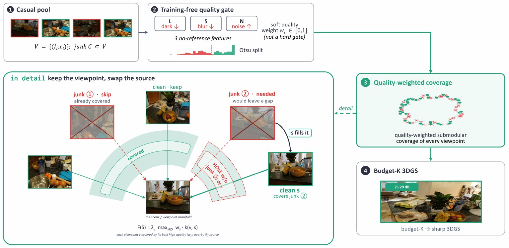
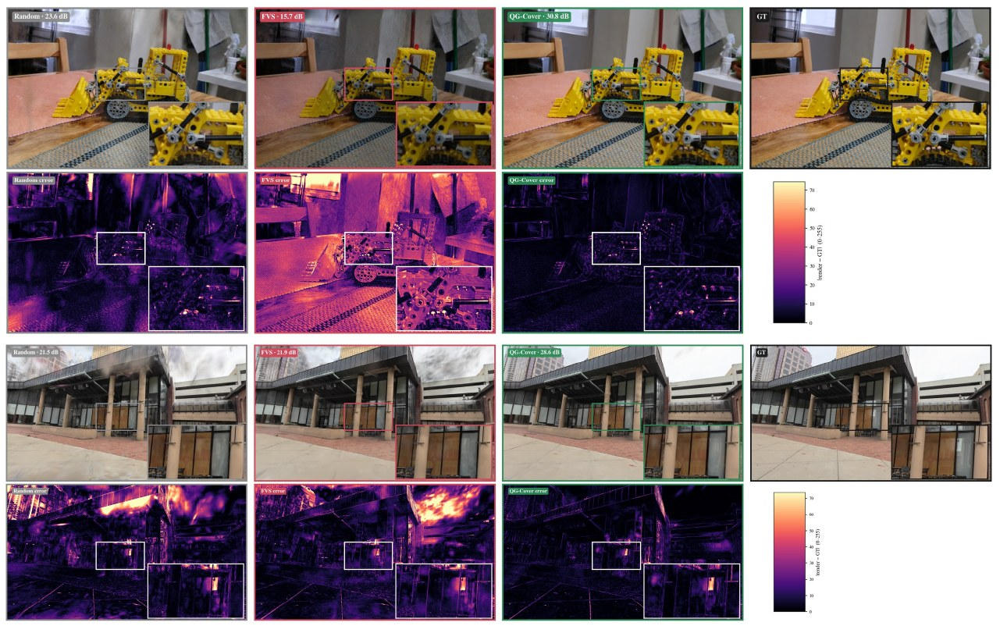

Casual, handheld capture for novel view synthesis yields image pools that are both highly redundant and quality-varying, containing underexposed, noisy, or motion/defocus-blurred frames. We study view selection for 3D Gaussian Splatting (3DGS) under a fixed training-view budget and show that coverage-only selection is unreliable in this regime: Farthest-View Sampling (FVS) favors geometrically extreme viewpoints, which in casual capture coincide with degraded frames, so it can even underperform random selection. A training-free no-reference quality gate placed in front of coverage selection recovers +1.69 dB over FVS on seven mip-NeRF-360 scenes with 30% corrupted frames at a 40%-of-pool budget; Quality-Gated Coverage (QG-Cover), a quality-weighted submodular facility-location objective that covers every viewpoint while favoring high-quality source views, raises the gain to +1.95 dB, leads at every budget tier, and degrades gracefully when clean frames are scarce. That same subset even beats training on the whole corrupted pool, yet still lands 1.57 dB below clean-pool training: selection is damage control, not free information. On 26 real casual captures (nerfbusters, DL3DV) QG-Cover beats FVS on every scene at the tightest budget tier, and our gate independently flags a comparable fraction of their frames as low quality—this regime arises naturally in casual capture rather than by our construction. Retraining all 33 scenes at the standard 30k 3DGS schedule preserves the matched-budget advantage, while the weaker subset-beats-pool result is schedule- and domain-sensitive; we report where it breaks.
Consider a phone video orbiting a plant. Farthest-View Sampling seeks the K maximally spread camera centers—but the geometrically extreme viewpoints are captured near the orbit's direction changes, where hand motion, exposure and focus are least stable. FVS therefore systematically over-selects the blurriest frames (on nerfbusters/century it places 18 of 40 picks in the blurriest 30%, versus 8 for QG-Cover), and 3DGS trained on that subset floats and smears texture. Prior view-acquisition signals—information gain, geometric coverage, render quality—all assume every candidate is a valid image. We show that assumption is load-bearing: FVS falls below uniform random selection on up to 13 of our 33 scenes.

A casual pool mixes clean and junk frames. A training-free no-reference gate scores each view from luminance \(L\), Tenengrad sharpness \(S\) and high-frequency noise \(N\). Each feature is robustly z-scored within the scene (median/MAD) and turned into one-sided corruption evidence, so no benign feature can cancel evidence from another:
$$\mathrm{corr}_i = \mathrm{ReLU}\big(-z(L_i)\big) + \mathrm{ReLU}\big(-z(S_i)\big) + \mathrm{ReLU}\big(z(N_i)\big),\qquad q_i = -\,\mathrm{corr}_i .$$An Otsu threshold on \(\{q_i\}\) gives a scene-adaptive hard gate (Detect+Cover: FVS over the gated-clean views). QG-Cover instead folds quality into a single quality-weighted facility-location objective that must cover every pool viewpoint, using only selected views as sources:
$$F(S) = \sum_{v \in V} \max_{s \in S} \; w_s \, k(v, s), \qquad k(v,s) = \exp\!\big(-\lVert c_v - c_s \rVert^2 / 2\sigma^2\big).$$A corrupted viewpoint is still a coverage target, but it is best covered by a nearby clean view rather than by its own low-quality capture—“keep the viewpoint, swap the source.” The kernel bandwidth \(\sigma\) is the median nearest-neighbor camera spacing, so there is no balancing hyperparameter. \(F\) is monotone submodular, and greedy selection attains a \((1-1/e)\) guarantee on the coverage objective in \(O(KN^2)\) time.
Three classical image statistics; no learned model, no per-scene or per-dataset tuning.
A pre-processing front-end; composes with robust or deblurring 3DGS trainers.
As clean views grow scarce, trades a little coverage for quality instead of selecting junk.

Held-out novel views on the same test frame under controlled corruption (kitchen, mip-NeRF-360 with 30% synthetic junk; top) and on a genuine casual capture (DL3DV/0a4853, no synthetic corruption; bottom), at the K=40% tier. Columns: Random, FVS, QG-Cover (ours), ground truth. Error rows show per-pixel |render − GT| (darker is better).
| Dataset | K = 40% | K = 60% | K = 80% | K = 100% | |||||||||
|---|---|---|---|---|---|---|---|---|---|---|---|---|---|
| Rnd | FVS | D+C | QG | Rnd | FVS | D+C | QG | Rnd | FVS | D+C | QG | ||
| mip-NeRF-360 (7, 30% junk) | 24.00 | 24.33 | 26.02 | 26.28 | 25.00 | 25.04 | 25.68 | 26.79 | 25.09 | 25.46 | 25.42 | 26.29 | 25.21 |
| nerfbusters (12, real) | 25.56 | 26.03 | 26.51 | 26.71 | 25.85 | 25.95 | 26.33 | 26.54 | 25.96 | 25.99 | 26.13 | 26.16 | 26.02 |
| DL3DV (14, real) | 27.59 | 28.16 | 28.56 | 28.45 | 27.98 | 28.14 | 28.42 | 28.47 | 28.03 | 28.11 | 28.03 | 28.31 | 28.18 |
K is a percentage of each scene's own candidate pool. Gold / grey: best / second-best of FVS, D+C (Detect+Cover) and QG (QG-Cover). At K=100% every selector takes the entire pool. Per-scene results for all 33 scenes are in the paper.
| Scene | Clean pool | Corrupted pool (30% junk) | Cost / gain | |||
|---|---|---|---|---|---|---|
| all frames ceiling | uniform 40% | all frames | QG-Cover 40% | coverage cost | gating gain | |
| room | 30.76 | 29.60 | 27.15 | 29.48 | −1.17 | +2.32 |
| counter | 27.54 | 26.93 | 25.76 | 25.77 | −0.61 | +0.00 |
| kitchen | 29.89 | 29.28 | 25.44 | 29.07 | −0.61 | +3.62 |
| bonsai | 30.06 | 30.02 | 26.84 | 28.66 | −0.05 | +1.82 |
| garden | 26.72 | 25.72 | 24.44 | 25.03 | −1.00 | +0.59 |
| bicycle | 23.50 | 22.63 | 22.34 | 22.82 | −0.87 | +0.48 |
| stump | 26.48 | 23.85 | 24.46 | 23.16 | −2.63 | −1.30 |
| mean | 27.85 | 26.86 | 25.21 | 26.28 | −0.99 | +1.08 |
Dropping 60% of a clean pool costs only −0.99 dB (casual capture is redundant), while spending the same 40% budget through our gate on the corrupted pool buys +1.08 dB. That asymmetry is why a well-chosen 40% beats the whole corrupted pool—yet it still trails the clean-pool ceiling by 1.57 dB: view selection is damage control, not a way to manufacture information.
This work was supported by Institute of Information & communications Technology Planning & Evaluation (IITP) grant funded by the Korea government (MSIT) (No. RS-2026-25522885, Development of a World Foundation Model for Training and Deployment of Physical AI Systems).